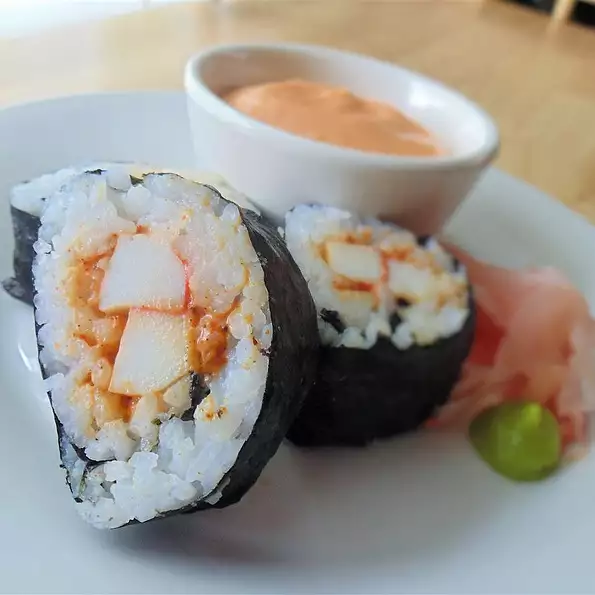

Sushi

Description
"An Authentic Japanese cuisine that lingers for a while after with a duller burning, flavorful taste."
Sushi (すし, 寿司, 鮨, 鮓, pronounced [sɯɕiꜜ] or [sɯꜜɕi]) is a Japanese dish of prepared vinegared rice (鮨飯, sushi-meshi), usually with some sugar and salt, accompanied by a variety of ingredients (ねた, neta), such as seafood, often raw, and vegetables. Styles of sushi and its presentation vary widely, but the one key ingredient is "sushi rice", also referred to as shari (しゃり), or sumeshi (酢飯).🍙
The inventor of modern sushi is believed to be Hanaya Yohei, who invented nigiri-zushi, a type of sushi most known today, in which seafood is placed on hand-pressed vinegared rice, around 1824 in the Edo period (1603–1867). It was the fast food of the chōnin class in the Edo period. 🏹
Ingridients
- ¼ cup mayonnaise
- 1 tablespoon chile sauce🎏
- 1½ teaspoons togarashi (Japanese seven spice)
- 1 teaspoon prepared wasabi
Steps
- Mix mayonnaise, chile sauce, togarashi, wasabi, chili powder, and paprika together in a bowl; fold in imitation crabmeat until evenly coated.
- Spread rice in an even layer across each nori sheet. Spoon a layer of crabmeat mixture in a row along the top edge of each nori sheet. Roll nori sheet around the crabmeat mixture filling, starting on the filling side until completely wrapped. Cut each roll into 8 equal pieces.
Home